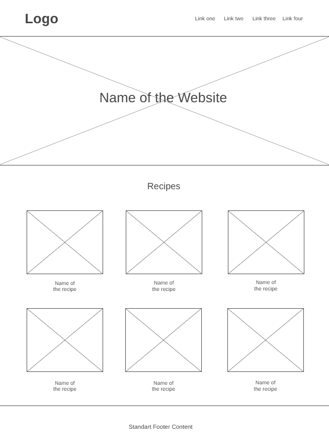
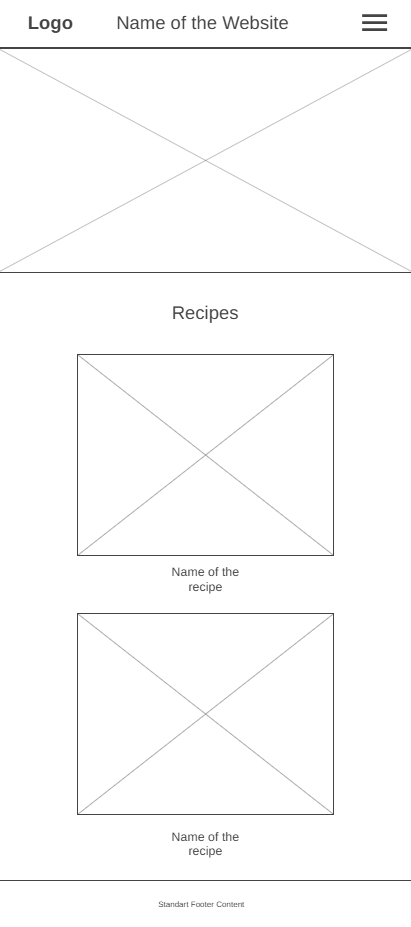

Site Name
The Recipe Board. I chose this name because it represents a digital space similar to a kitchen board where people pin or save their favorite recipes. It feels simple, friendly, and easy to remember, and it matches the purpose of the website: a place to organize, browse, and return to beginner-friendly recipes.
Site Purpose
The site provides a simple and accessible space for users to explore beginner-friendly recipes, view ingredients and instructions, and save their favorite dishes. It serves as a personal recipe hub where visitors can browse recipe collections, mark recipes as favorites, and return to them later using the Favorites page.
Scenarios
How can I save my favorite recipes so I can easily find them later?
Can I quickly find recipes that use ingredients I already have at home?
Color Schema
- #862D0F: h2, accents, header and footer background color.
- #FFFFFF: Heading, nav text and background color.
- #000000: Text color.
Typography
- Montserrat: Headings font.
- Lora: Body, nav and footer font.
Wireframe

